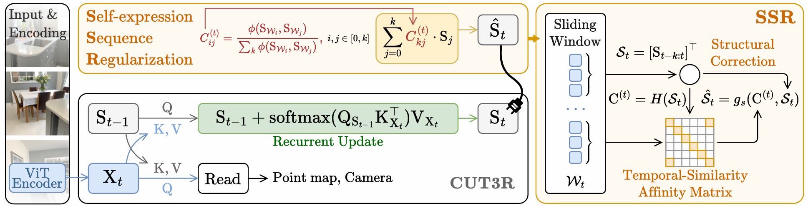
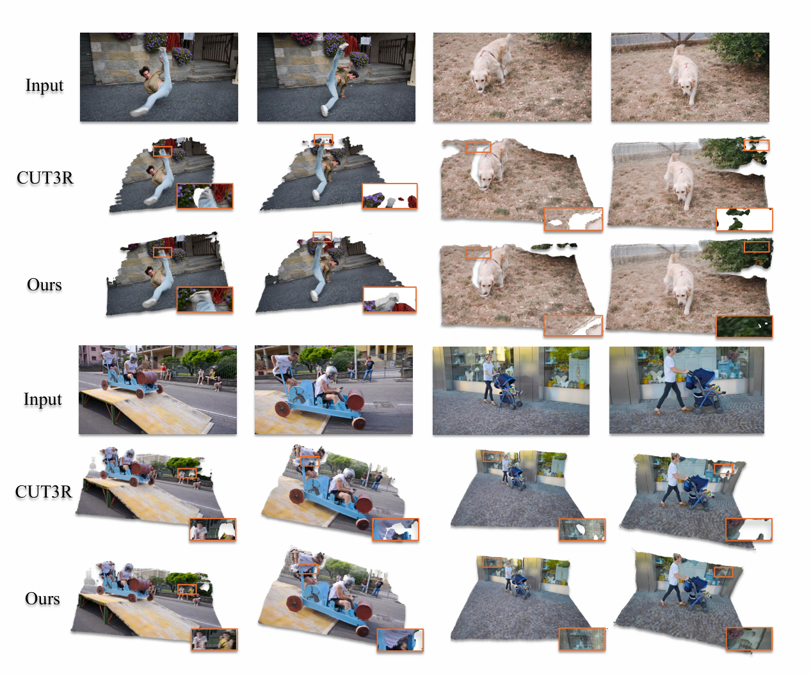
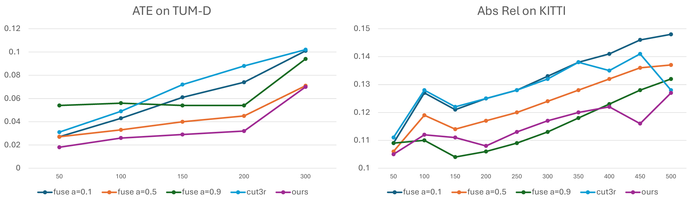

1Shool of Electronics and Information, Northwestern Polytechnical University and Shaanxi Key Laboratory of Information Acquisition and Processing
Streaming 3D reconstruction requires long-horizon state updates under strict latency constraints, but stateful recurrent models often suffer from geometric drift due to accumulated errors. We revisit this problem from a Grassmannian manifold perspective: the latent persistent state is viewed as a subspace representation evolving on a manifold. Based on this, we propose Self-expressive Sequence Regularization (SSR), a plug-and-play, training-free operator that enforces sequence regularity during inference. SSR computes an analytical affinity matrix via the self-expressive property to pull noisy predictions back toward the manifold-consistent trajectory with minimal overhead. Experiments demonstrate that SSR consistently reduces drift and improves reconstruction quality across multiple streaming 3D tasks.

Illustration of the Self-expressive Sequence Regularization (SSR). We introduce a training-free regularization scheme for CUT3R. Specifically, we refine the frame-wise states calculated by foundation models through a sliding-window reconstruction process. By leveraging the affinity between temporal states, our method achieves sequence regularization without introducing learnable parameters, making it directly applicable to off-the-shelf pre-trained foundation model.

Our approach substantially improves temporal coherence and structural stability. On the KITTI benchmark, SSR remains robust as sequence length increases, whereas vanilla models exhibit clear degradation. Furthermore, on in-the-wild dynamic sequences from DAVIS, our method reduces structural artifacts and prevents catastrophic failures by alleviating long-range contextual decay, preserving global scene consistency even under challenging motion patterns.

Following the original protocol, the baseline evaluation length for Cut3R on KITTI is set to 110 frames. As sequence length increases, vanilla Cut3R exhibits clear degradation in depth estimation accuracy. In contrast, incorporating the historical context fusion operation consistently improves over the baseline and remains robust across the full range of a. The same pattern is observed on TUM-D pose estimation benchmarks. Together, these cross-task and cross-dataset findings support our hypothesis that contextual forgetting is a core limitation of Cut3R, and that reducing this effect is essential for length generalization in streaming spatial models.
@inproceedings{deng2026ssr,
title={Self-Expressive Sequence Regularization: A Training-Free Approach for Streaming 3D Reconstruction},
author={Deng, Hui and Mao, Yuxin and He, Yuxin and Dai, Yuchao},
booktitle={arXiv preprint arXiv:2603.14765},
year={2026}
}